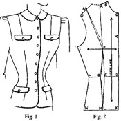

1942—Modern Pattern Design
by Harriet Pepin
Chapter 3—Hip Length Patterns
Drafting a Front Hip-Length Sloper
Up to this time, you have been making patterns which have extended only to the waistline. You have learned that the sloper can be the means to producing an almost limitless number of new designs, all of which are based upon but a few principles common to the block system of pattern making. The sloper, when made for an individual, is a pattern of that certain person's body contours. If the individual has a small waist and large bust, then her sloper will have an extra large basic dart because, for the size of her bust measurement, the fabric must be brought down to the size of her waist measurement. If she has sloping shoulders and a pronounced curve through the shoulders, the pattern must be carefully made to record such a fact. Then, as it will be used as the basis for creating designs for her, the designer may choose lines that will aid in concealing her bad proportions.
People who have ideal or nearly ideal bodily proportions can wear garments that may be so very simple in form and line that they may be cut directly from a sloper. But if the customer has a body which is not one to be so revealed, her sloper pattern remains only a functional means to creating designs that involve drapery, divisional lines, etc. which will aid in hiding her bad proportions. The information set forth in these pages was originally based on normal figures. But it is now being successfully adapted to the designing for women of all sizes and shapes. It is to be assumed that the reader will use his judgment with each new customer.
Your basic waistline control sloper may be the basis for making a hip-length jacket sloper.
Designs which provide for vertical fitting around the waistline, without any seam at the waist, are adaptable to normally proportioned figures. Women who have too intense curves about the waistline must be fitted with garments which have:
2. Semi-fitted silhouette (to conceal irregular curves).
3. Several vertical seams, or seams with additional vertical darts to provide opportunity for more shaping to the curves.
The first step in making the front hip-length sloper is to divide the bust control between the waistline and the shoulder. On some occasions, this simple hip-length sloper may be used in this simple form, but, you will find through the study of following problems, it is the basis for many other styles which produce a superior fit in finished garments.
Label your waistline sloper as indicated above, making point A the center of the shoulder seam. Lay your sloper upon pattern paper and trace around it in the following manner:
A to B; B to C; C to D; D to E.
Holding the waistline sloper firmly in this position, place a dot halfway between points G and E. Trace along the side of dart E-F.
Keep pencil point in position at the point of waistline dart and pivot your sloper to the right until the left side of the waistline dart falls upon the dot. With sloper in this position, trace:
F to G; G to H; H to I; I to J; J to AA.
Lift your sloper. The space between AA and A is the opening of the shoulder dart which has been shifted by partially closing the waistline dart. Connect A and A A with F. (Shorten both shoulder and waistline darts as indicated when using this pattern for an actual garment.)
D-K—Extend line C-D downward equal to hip length (7 inches).
K-L—Square a guide-line from D-K; K-L equals D-E plus 3/8 inch. Draw L-E.
L-M—Extend K-L a distance equal to G-E. Label point M. Connect M and G.
N is your side hip point. Use one-half front Hip Measurement of model form. From that, subtract length of K-L. Amount remaining must be M-N.
Using tapeline and square, locate point N, 7 inches down from point H, the proper distance from M determined above. Curve lines H-N and M-N very slightly.
The area enclosed by M-G-F-E-L is an "open end" dart extending to hip. Allow usual seam allowances and complete the pattern. Mark in position of normal waistline H-G-E-D on muslin as well as pattern as a guide when judging results. Front will be attached to back hip-length muslin produced in next page of instructions.
NOTE: In standard sizes, Point N should be slightly higher than the level of point M as shown in the diagram. When making this hip-length jacket sloper for individuals, the heavier figures will require about two-thirds of the basic waistline control shifted up to the shoulder position. The extra slender figures may require only one-third shifted to the shoulder. This should then produce a finished jacket length sloper which will more closely resemble the standard sizes in the hip and waistline areas. The sloper will then be more adaptable for making the following styles of jackets.
Drafting a Back Hip-Length Sloper
The back hip-length sloper is used in its original form as the basis for many jacket designs and full length garments. It is simple to construct and, if the darts are properly spaced for the individual wearer, it is becoming to most figure types.
In order to keep the grain of the fabric on a true horizontal across the shoulders, a seam is thrown into the center back which might be handled like a dart if desired. This seam is shaped to conform to the curve of the back and then shapes outward again to accommodate the curve of the hips.
Observe that the control is not changed at the waistline or the shoulders. The procedure merely includes the provision for a center back seam which will shape the fabric as needed at that point, and changes the position of the grain.
1. Draw a vertical guide line at the left edge of paper.
2. Place back bodice sloper in such a position as to make A rest upon guide line and B 5/8 inch from it.
3. With sloper in that position, trace around it, including the darts. For convenience, label points B-C-D-E as shown.
The hip section should be built on as follows:
F—From point B, measure off a straight line 7 inches long to somewhere on the vertical guide line. Mark point F. Square a line right from guide line A-F. This is the tentative hip line.
F-G—Along the hip guide line, measure off a distance equal to distance from B to C plus one inch. Label point G. Connect G and C; G and D to complete dart.
G-H—Use half of back hip measurement. Subtract from that the distance from F to G. The remainder will be length of G-H. With aid of tape-line and square, locate point H 7 inches down from point E. Curve E-H slightly.
Shorten both ends of dart slightly. If possible, make sides of dart equal. As waistline is abandoned in this type of garment, position of line D-E may be shifted if necessary to equalize sides of dart. (When this pattern is made for individuals having more than normal curves, this step may be impossible. Such figures would be fitted with aid of seam on line D-E and use panel effect down center back of jacket only.) See page 87.
Allow seams in usual manner including the center back, A-B-F. Cut muslin proof. Trace in position of waistline B-C-D-E. Pin this section with front section and test upon the model form.
NOTE: As the grain of fabric is no longer parallel to center back seam A-B, but parallel to guide line, this means that the shaped center back seam does not follow grain of fabric. This change in grain of fabric straightens grain at underarm seam slightly. Mark final muslin for plaid before cutting to observe this fact closely.
The position of the hip dart was established by measuring a standard size 14 model form. When making personal slopers, this would vary according to the relative hip and waist measurements of the individual. The best plan is to plan the dart for a figure having ideal proportions, such as those used in a model form, and then correct the position of the dart slightly while the muslin is upon the customer, if necessary.
Making Front and Back Hip-Length Slopers
Most designers, making full length garments or jackets, like to have slopers on hand of the two patterns made in the foregoing problems. In later problems, when you will use them for making various jacket designs and full length garments, you too will find it convenient.
Cut away all seam allowances on the foregoing patterns and cut out the complete dart section, extending to the bust. Using brown cardboard, trace around the patterns and label them as shown in the diagrams below.
The notches are placed in the waistline area to mark the exact position of the waistline as that aids in placing other horizontal lines which might be a part of a design.
Notice that the darts are squared off again in the finished sloper to hold the sections together. Make a hole, with your scissors, on the bust point as a means to pivoting the front section.
Check the sloper to make sure that M-G and E-L are still in the original parallel position of the original draft.
Semi-Fitted Jacket
This style of jacket is extremely popular because the front may be fitted as closely as desired and it is generally becoming to many women. It is made from the hip-length sloper. By closing the open-end dart at the hip-line, through pivoting, still more control is shifted to the shoulder area. This produces a jacket which has the grain of the fabric on the line of the bust and hip lines.
1. Starting with shoulder seam point A, trace A-B-C-D-K-L-E-F.
2. Hold pencil in point of dart, pivot pattern to right until point M meets L. Continue tracing F-G-M-N-H-I-J-AA.
3. Connect points A and AA with bust point F.
4. Shorten darts as desired. Mark notches as for basic sloper to show waistline.
5. Allow usual seams on the pattern, mark muslin for a plaid. It can be attached to the following back section for testing.
In this design for the jacket back, the vertical shaped seam A-B-F is abandoned for the straight line A-F which will lay upon the fold of the fabric when garment is cut. Because this straight line is shorter than the original shaped fitting line, this will cause the garment to only partially fit the back waistline.
To modify this, the side darts may be increased at point C one-fourth inch, but if an attempt is made to establish a close fit through the use of darts only, horizontal wrinkles will appear at the center back of the garment.
The semi-fitted silhouette is flattering to those who have abnormal proportions. It modifies the bad curves. The exact depth of the fitting must be decided by fitting directly upon the individual. The pattern can be cut and the muslin adjusted to suit and then the pattern proportions established from the muslin. The only women who should wear closely fitted clothes are those who have ideal figure proportions!
NOTE: These various designs for vertically fitted jackets may be used interchangeably. The same patterns can be used for dresses which may be designed to have a sash or belt. Wash dresses, maids uniforms and other such types of apparel frequently are found to have the back section cut from this pattern.
Multiple Dart Tucks
Many variations of designs for either the back or front of jackets may be developed. The single dart may be substituted for several, just as you have learned in bodices. The foregoing diagrams show the bodice sloper pattern used as a foundation for such a style of garment.
French Lining Jacket
This design takes its name from the old shaped linings made as foundations for the draped garments of the 19th century when France provided most of the patterns for all our garments. It is also used over standard dress forms which custom designers pad up for special customers. The many seams provide opportunity for close adjustments as needed. In this simple form, it is a favorite with the coat and suit industry every year and is used as the basis for many classic styles each year.
It is occasionally referred to as the "princess" style in dresses. Additional seams and secondary darts are occasionally used when desired. When used for dresses, it may be shortened and is then called the "basque" type. (See page 178.)
Obviously, when this principle of pattern designing is used in coats or jackets, shoulders may be broadened or raised to permit the use of padding (see page 125), but the sloper developed for use in jackets and coats could be used in the manner illustrated above and the garment would employ this same means of shaping the fabric to the figure. In these pages, the fundamental principles of cutting patterns are illustrated in various types of garments merely to show the reader how they might be used to produce a variety of garments.
Note the dotted lines around the bust. The curved dotted line G-F produces a more revealing fit at that point. The "rib measurement" is used to decide the intensity of this curve. If the curved line G-F is intense, and therefore lengthened, it may be necessary to slash the front panel section horizontally between E and F and spread until the length of E-F equals the curved line G-F. This will produce a bust revealing garment which closely fits the diaphragm. To further emphasize the fit at this point, the center front edge may be curved also. Designers of expensive, simple but expertly fitted garments use these tricks in shaping which give unusual beauty to garments. At this stage, you are primarily studying methods. With study, you will master the finer points of this art of designing patterns.
If the reader will turn to pages 221 and 230 he will find this same principle illustrated for cutting slips and coats. It is one of the most important principles of cutting, as all control has been absorbed in the seams and it produces a garment which is fitted entirely through the use of vertical seams. This permits the grain of the fabric to rest upon the bust and hip levels, which is assurance that the garment will hold its shape well with continuous wearing.
Notice that the normal shoulder dart in the back section can be shifted into the seam. Also observe that the grain of the fabric is established across the bust. In normal figures this places the grain on the lower edge of the jacket also. As the lower edge of the jacket is of secondary importance except as a line of design, it may be altered to suit the posture of the wearer.
Because this design is so very simple, it is of utmost importance that the position of the seams be pleasingly established.
For further study clip many examples of the use of this basic cut in all types of apparel, from bathing suits to bridal attire. You will soon be aware of its possibilities in designing. It is least interesting in this simple form.
You will observe, upon assembling several variations of this French lining pattern, that through slight changes in line, or through the addition of varying shaped pockets, it may be adapted to figures of varying proportions. When fashion calls for movement at the back of the jackets, flares may be added in the same manner they would be added to gores in skirts. Inverted pleats may be inserted in the lower seams as they would be in skirts, also. Through interesting styling details added to the seams, a new design may emerge—and yet the same pattern remains. Hence, it is important, to the hobbyist who may design patterns as a means of developing a personal wardrobe, to produce a well fitted French lining pattern which may be used again and again in clothing. It saves much time and gives further opportunity for producing new designs, each of which is dependent upon the fabric and the details for new design interest.
Upon thumbing through period fashion books, you will find that this same French lining was used for the jackets of our grandmothers' day. You will find that this method of shaping men's garments was used in early days also. Many old records offer excellent inspiration for modern designs.
Variations of French Lining
On the following page we have an interesting variation of the basic French Lining. Through the combination of line, we create the illusion of width through the shoulders and then narrow the waist with the vertical lines in that area.
Because the new curved line falls directly over the bust, blending into the vertical line of the original dart, the control becomes shifted to that position. The curve of the bust has been intensified just for further beauty of the silhouette, as in the previous problem.
However, in the back section, the curved line does not fall across the point of the shoulder control dart and therefore we still have need for a control dart near the neck or shoulder. It has been placed at the shoulder neck point rather than the shoulder in order not to distract the attention from the main style interest in the garment.
 Below, the dotted lines of stitching show the position of the first division
of the pattern. When these have been established and the pattern is cut apart,
the simulated pleats are built on when making the final pattern. Because
these seams are curved at the waistline, these simulated pleats must be faced.
These facing patterns are made from the final pattern. Notches should be
placed in the shoulder seam to show where the topstitching should start.
This design presents a construction problem which must be understood by the
pattern designer to insure success in the final garment.
Below, the dotted lines of stitching show the position of the first division
of the pattern. When these have been established and the pattern is cut apart,
the simulated pleats are built on when making the final pattern. Because
these seams are curved at the waistline, these simulated pleats must be faced.
These facing patterns are made from the final pattern. Notches should be
placed in the shoulder seam to show where the topstitching should start.
This design presents a construction problem which must be understood by the
pattern designer to insure success in the final garment.
Peplum Jackets
The peplum style of jacket, which provides for a seam at the waistline is used for women having small waist measurement and large hip line. The back is used in combination with French lining styles when practical to do so.
As shown in small diagrams, occasionally the center front panel section is made without the waistline seam and then the small side peplum section is added. The panel effect is slenderizing and the seam from the panel to side seam at the waist aids in attaining a perfect fit in that area. Observe that this would be possible in the back also, but in such case the dart would not be eliminated as it would form the effect of the part from the dart point down through the hips.
These various styles of jacket patterns may serve as the basis for full length coats and dresses in unlimited variations. Through slashing, additional fullness may be added as desired. These will be illustrated in later examples showing the possibilities for cutting patterns for coats and other full length garments.